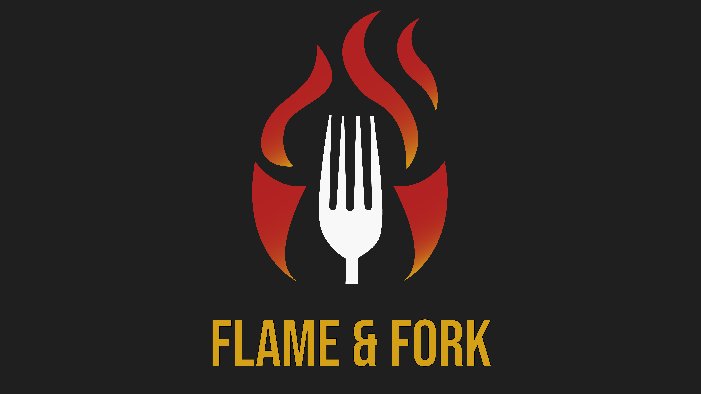
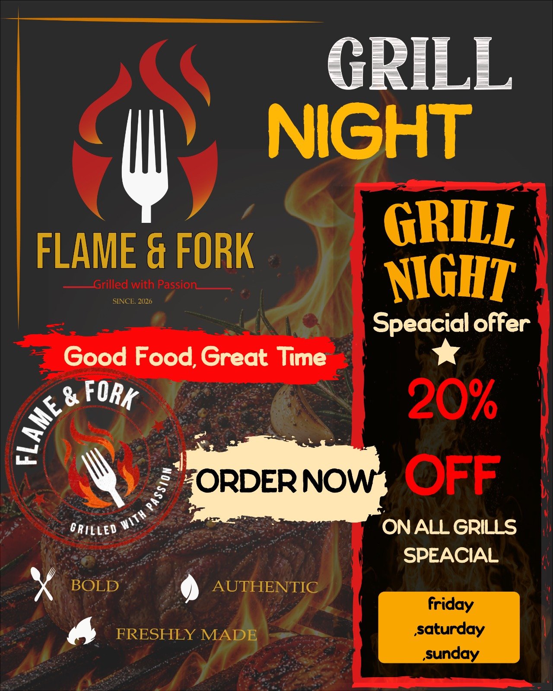
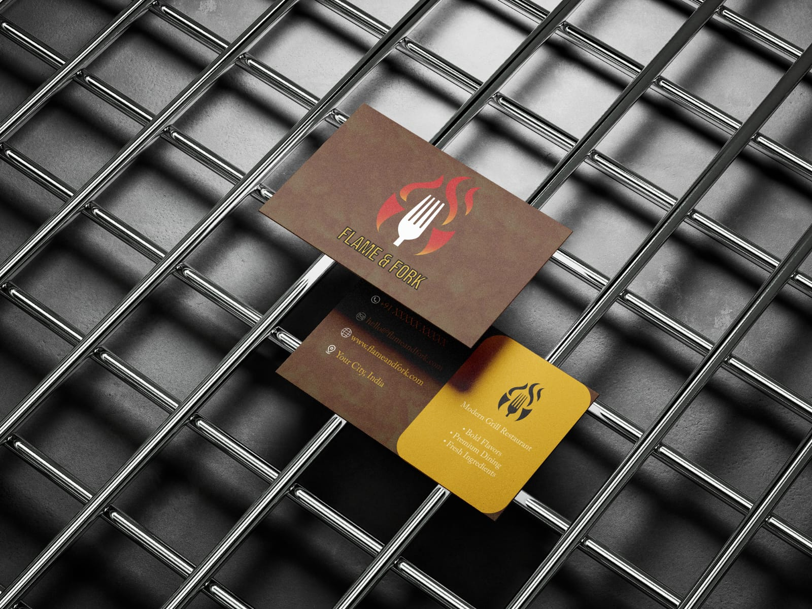
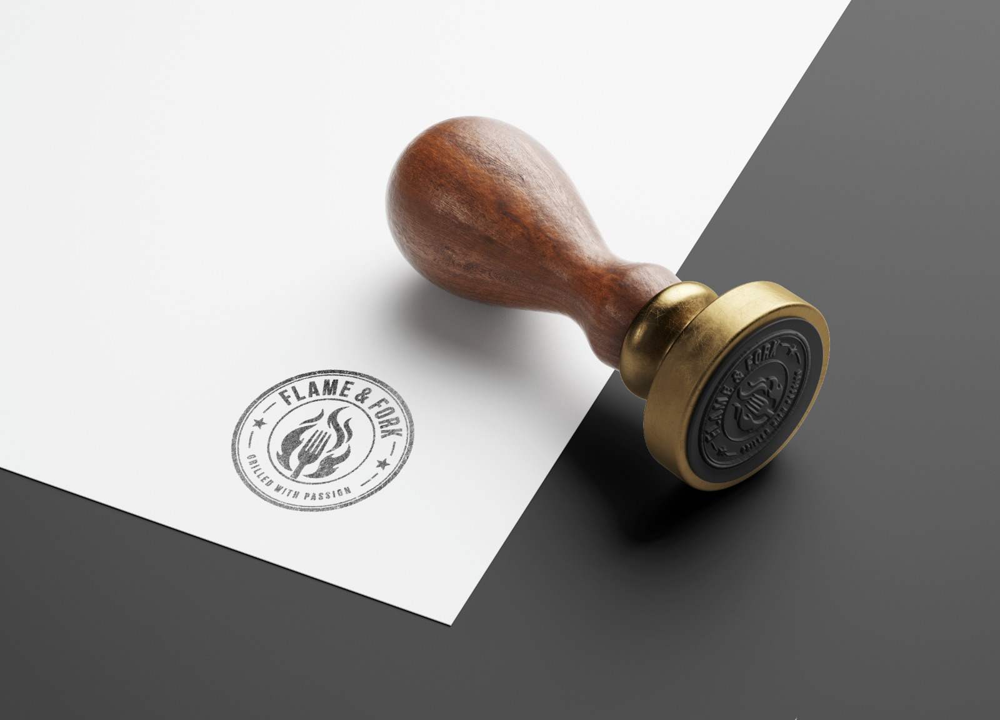
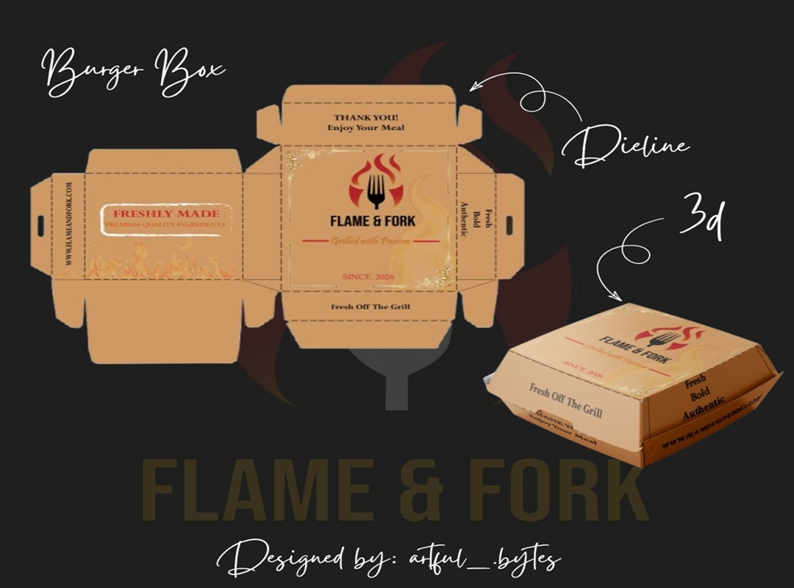
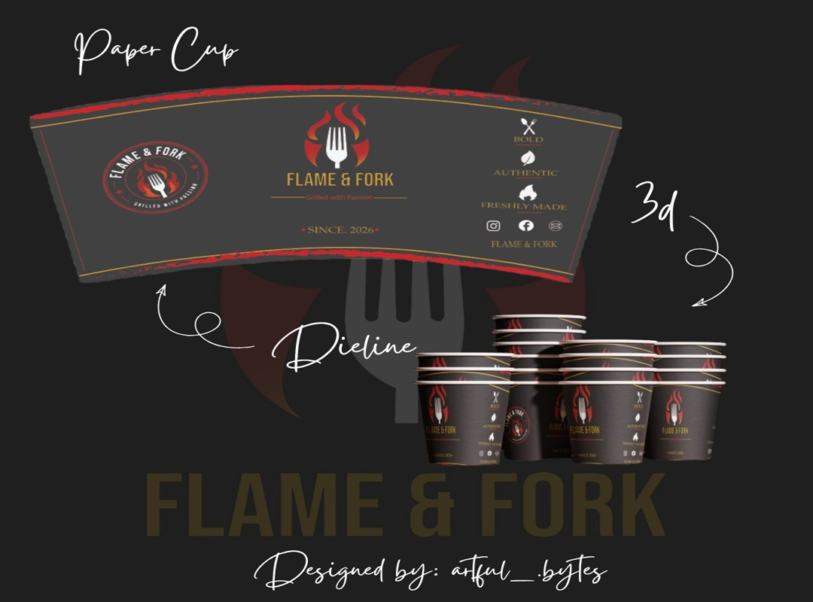
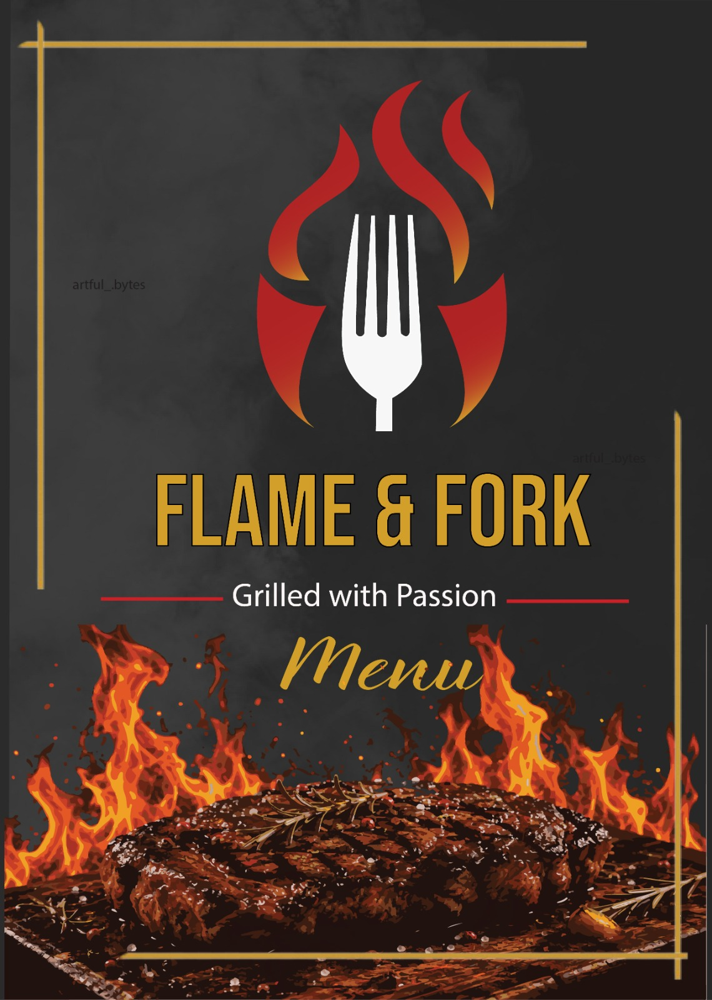
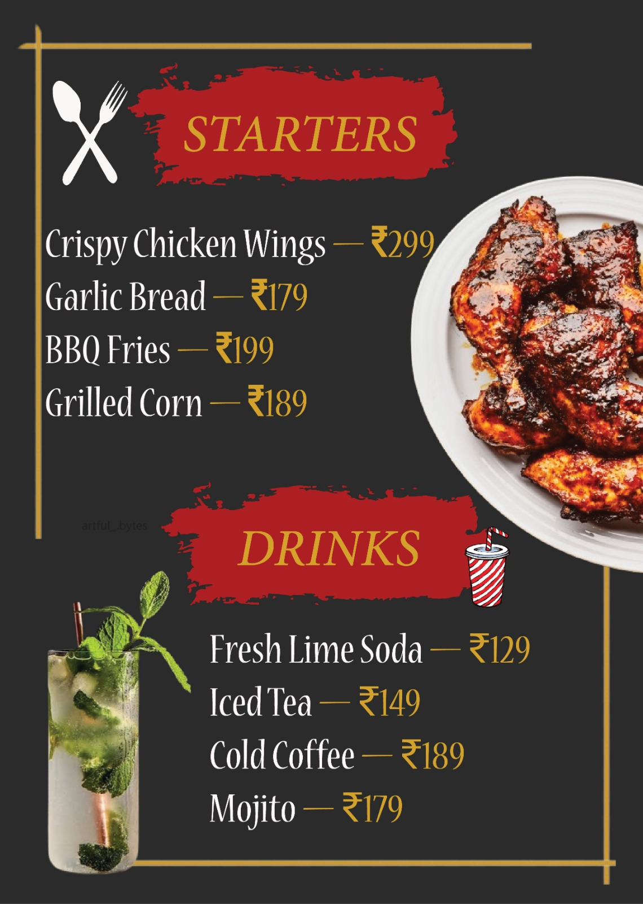
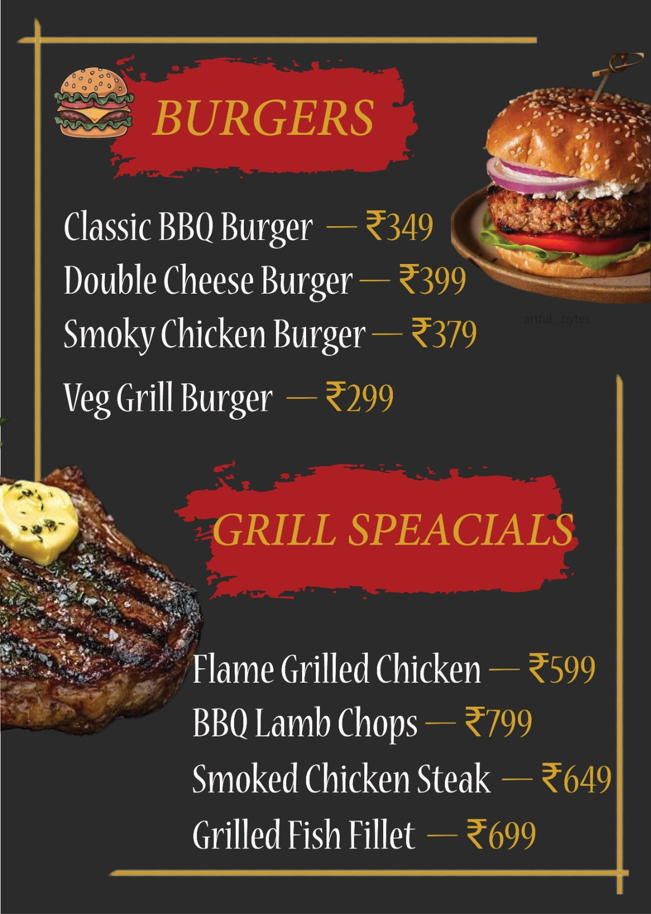
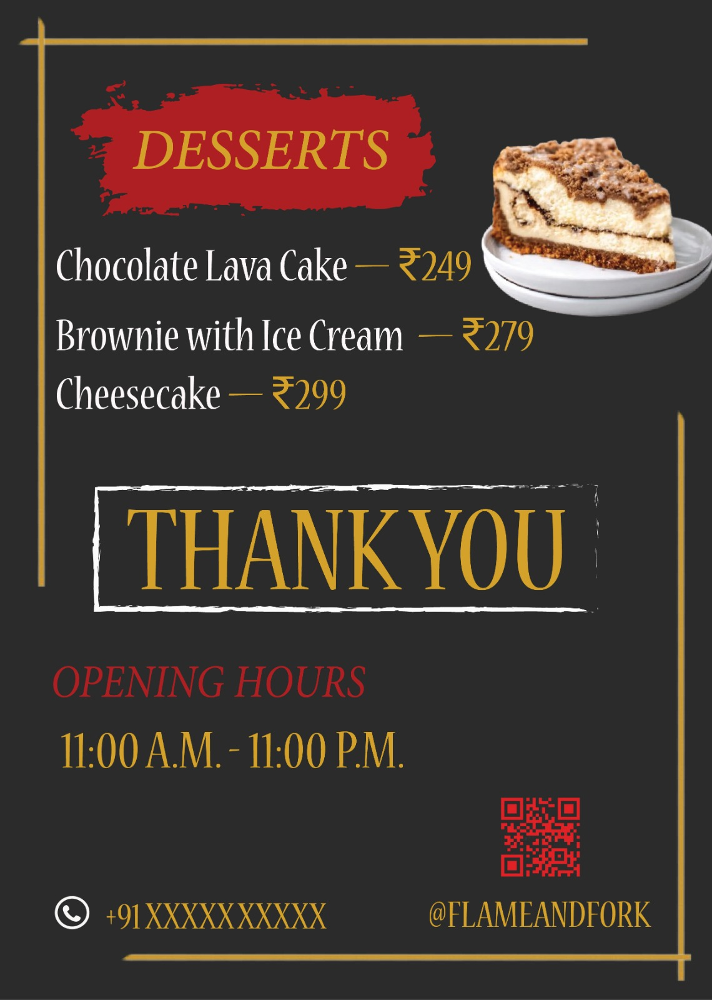

A complete visual identity system built for a modern grill restaurant — bringing together a bold logo, physical brand applications, packaging, promotional design, a full menu system, and print-ready artwork into one cohesive visual language. From the mark on a stamp to the graphics on a takeaway box, every touchpoint was designed to feel unmistakably Flame & Fork.
Brand System
A complete identity system designed to carry the same bold, warm and energetic character across print, packaging and promotional applications. Click any image to view full size.










The Brief
Flame & Fork is a restaurant identity concept built around the character of live-fire cooking — bold, warm, energetic and crafted around fresh food.
The objective was not simply to create a logo, but to develop a complete visual system that could work consistently across communication, packaging and physical brand experiences. The identity therefore extends from the primary logo into stationery, stamps, takeaway packaging, promotional material and the full restaurant menu.
The visual language combines a strong flame-and-fork symbol with warm restaurant-inspired tones and confident typography. This gives the identity enough personality to stand out while remaining practical across different sizes, surfaces and print applications.
The packaging system carries the same identity across a burger box and paper cup, each developed as a structural dieline so the branding is built around the physical form of the package rather than dropped onto it as a flat graphic.
The identity is carried through to the Grill Night promotional poster and the full menu — a cover and three interior pages — showing how the same visual language holds up across campaign communication and everyday customer-facing material.
Project Details
The Approach
The project began with the core identity. The flame-and-fork mark establishes the visual foundation and becomes the recognisable element carried throughout the brand applications.
Once the identity was established, it was translated into physical brand elements. The business card and stamp demonstrate how the identity behaves on smaller print surfaces, while the cup and burger box dielines extend it into the restaurant's takeaway experience.
The packaging was approached structurally as well as visually — each dieline was built to match the physical form of its package, so the graphics fold and sit correctly once produced.
Finally, the identity was extended into everyday customer-facing material: the Grill Night campaign poster and a full four-part menu, proving the system holds together from a single business card to a multi-page printed menu.
Brand Applications